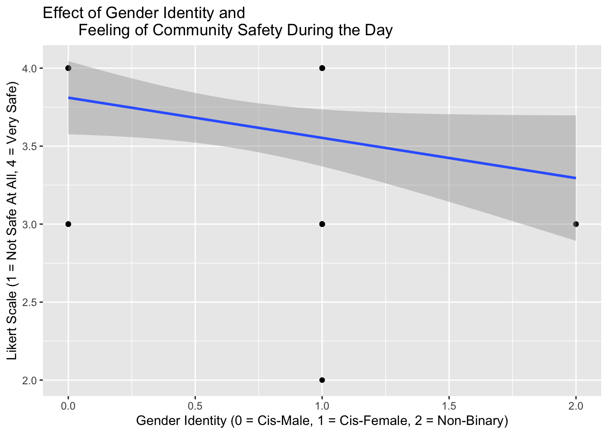
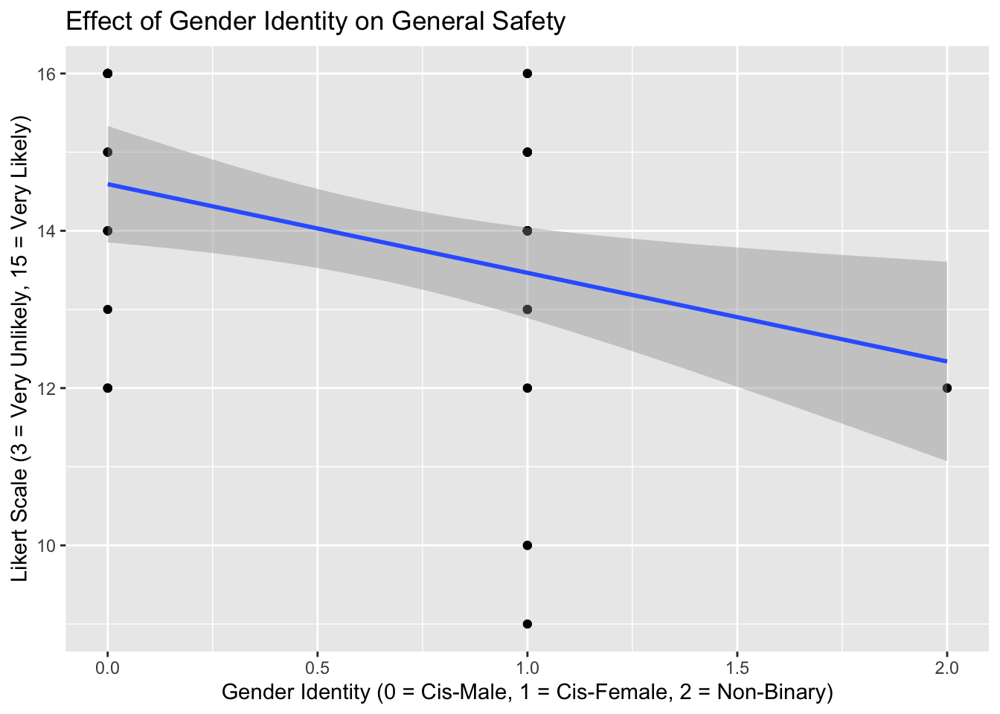

Sexual Orientation Frequency
1 Heterosexual (82.2%) 37
2 Queer (17.8%) 8
ggplot(het_d_table, aes(x ="", y=het_d_Value, fill=het_d_Groups)) +geom_bar(width =1, stat ="identity") +coord_polar(theta ="y", start =0) +scale_fill_manual(values =c("steelblue", "firebrick")) +labs(x ="", y ="", title ="Sexual Orientation Distribution Frequencies by Percentage",fill ="Sexual Orientation") +theme(plot.title =element_text(hjust =0.5), legend.title =element_text(hjust =0.5, face="bold", size =10))
# race percentages and pie chartPOV %>%group_by( race ) %>%summarise( percent =100*n() /nrow(POV) )
# A tibble: 8 × 2
race percent
<chr> <dbl>
1 Asian 40
2 Asian,Other 2.22
3 Black or African American 11.1
4 Hispanic or Latino 6.67
5 Other 2.22
6 White or Caucasian 33.3
7 White or Caucasian,Asian 2.22
8 White or Caucasian,Hispanic or Latino 2.22
table(POV$race)
Asian Asian,Other
18 1
Black or African American Hispanic or Latino
5 3
Other White or Caucasian
1 15
White or Caucasian,Asian White or Caucasian,Hispanic or Latino
1 1
POV <-mutate(POV, race_recod=case_when( race =="Asian"~"Asian", race =="Black or African American"~"Black or African American", race =="Hispanic or Latino"~"Hispanic or Latino", race =="White or Caucasian"~"White or Caucasian", race =="Asian,Other"~"Biracial", race =="White or Caucasian,Asian"~"Biracial", race =="White or Caucasian,Hispanic or Latino"~"Biracial", race =="Other"~"Asian"))table(POV$race_recod)
Asian Biracial Black or African American
19 3 5
Hispanic or Latino White or Caucasian
3 15
# A tibble: 5 × 2
race_recod percent
<chr> <dbl>
1 Asian 42.2
2 Biracial 6.67
3 Black or African American 11.1
4 Hispanic or Latino 6.67
5 White or Caucasian 33.3
RaceGroups =c("Asian", "Biracial", "Black or African American", "Hispanic or Latino", "White or Caucasian")RaceValue =c(19, 3, 5, 3, 15)race_table <-data.frame(RaceGroups, RaceValue)colnames(race_table) <-c("Race", "Frequency")race_table
Race Frequency
1 Asian 19
2 Biracial 3
3 Black or African American 5
4 Hispanic or Latino 3
5 White or Caucasian 15
Race Frequency RaceGroups cumulative
1 Asian 19 Asian 19
2 Biracial 3 Biracial 22
3 Black or African American 5 Black or African American 27
4 Hispanic or Latino 3 Hispanic or Latino 30
5 White or Caucasian 15 White or Caucasian 45
midpoint labels
1 9.5 42.2%
2 20.5 6.7%
3 24.5 11.1%
4 28.5 6.7%
5 37.5 33.3%
ggplot(race_table_percent, aes(x ="", y=RaceValue, fill=RaceGroups)) +geom_bar(width =1, stat ="identity") +coord_polar(theta ="y", start =0) +scale_fill_manual(values =c("steelblue", "firebrick", "yellowgreen", "mediumpurple", "darkorange")) +labs(x ="", y ="", title ="Race Distribution Frequencies by Percentage",fill ="Race Groups") +geom_text(aes(x =1.2, y = midpoint , label = labels), color="black",fontface ="bold") +theme(plot.title =element_text(hjust =0.5), legend.title =element_text(hjust =0.5, face="bold", size =10))
POV %>%group_by( age ) %>%summarise( percent =100*n() /nrow(POV) )
# A tibble: 3 × 2
age percent
<chr> <dbl>
1 18-24 40
2 24-34 33.3
3 35 and over 26.7
Age Groups Frequency AgeGroups cumulative midpoint labels
1 18-24 18 18-24 18 9.0 40%
2 25-34 15 25-34 33 25.5 33.3%
3 35 and over 12 35 and over 45 39.0 26.7%
ggplot(age_table_percent, aes(x ="", y=AgeValue, fill=AgeGroups)) +geom_bar(width =1, stat ="identity") +coord_polar(theta ="y", start =0) +scale_fill_manual(values =c("steelblue", "firebrick", "yellowgreen")) +labs(x ="", y ="", title ="Age Distribution Frequencies by Percentage",fill ="Age Groups") +geom_text(aes(x =1.2, y = midpoint , label = labels), color="black",fontface ="bold") +theme(plot.title =element_text(hjust =0.5), legend.title =element_text(hjust =0.5, face="bold", size =10))
# Creating a new variable to identify cis-het and non-cis-het participantstable(POV$genderid, POV$het_d)
# There is no column for "Non-binary Heterosexual" because there were no respondents identifying this waybarplot(p_campus_day, xlab ="Gender Identity and Sexual Orientation", ylab ="Likert Scale Responses",main ="How Safe Do You Feel On Campus During the Day?",beside =TRUE, legend =TRUE, cex.axis=1, col =c("steelblue", "firebrick"))
# barplot campus safety during nighttable(POV$campusssafe_night)
barplot(p_campus_night, xlab ="Gender Identity and Sexual Orientation", ylab ="Likert Scale Responses",main ="How Safe Do You Feel On Campus During the Night?",beside =TRUE, legend =TRUE, cex.axis=1, col =c("steelblue", "firebrick", "yellowgreen"))
# barplot community safety during daytable(POV$commsafe_day)
barplot(p_comm_day, xlab ="Gender Identity and Sexual Orientation", ylab ="Likert Scale Responses",main ="How Safe Do You Feel in the Community Surrounding the Campus During the Day?",beside =TRUE, legend =TRUE, cex.axis=1, col =c("steelblue", "firebrick", "yellowgreen"))
# barplot community safety during nighttable(POV$commsafe_night)
Cis-Gender \n Heterosexual Cis-Gender \n Queer
Not safe at all 1 0
Somewhat safe 24 4
Somewhat unsafe 4 1
Very safe 8 1
Non-Binary \n Queer
Not safe at all 0
Somewhat safe 0
Somewhat unsafe 2
Very safe 0
barplot(p_comm_night, xlab ="Gender Identity and Sexual Orientation", ylab ="Likert Scale Responses",main ="How Safe Do You Feel in the Community Surrounding the Campus During the Night?",beside =TRUE, legend =TRUE, cex.axis=1, col =c("steelblue", "firebrick", "yellowgreen", "mediumpurple"))
Cis-Gender \n Heterosexual Cis-Gender \n Queer
Very Unlikely 10 2
Somewhat Unlikely 10 1
Neither Likely nor Unlikely 6 0
Somewhat Likely 8 1
Very Likely 3 2
Non-Binary \n Queer
Very Unlikely 0
Somewhat Unlikely 0
Neither Likely nor Unlikely 0
Somewhat Likely 1
Very Likely 1
barplot(p_verbalthreat, xlab ="Gender Identity and Sexual Orientation", ylab ="Likert Scale Responses",main ="How Likely Do You Believe a Verbal Threat Could Ever Happen To You?",beside =TRUE, legend =TRUE, cex.axis=1, col =c("steelblue", "firebrick", "yellowgreen", "mediumpurple", "darkorange"))
barplot(p_verbalthreat2, xlab ="Gender Identity and Sexual Orientation", ylab ="Likert Scale Responses",main ="How Likely Do You Believe a Verbal Threat Could Ever Happen To You?",beside =TRUE, legend =TRUE, cex.axis=1, col =c("steelblue", "firebrick", "yellowgreen"))
barplot(p_verbalthreat3, xlab ="Gender Identity and Sexual Orientation", ylab ="Likert Scale Responses",main ="How Likely Do You Believe a Verbal Threat Could Ever Happen To You?",beside =TRUE, legend =TRUE,args.legend =list(x ="topright", inset =c(-0.15, 0)), cex.names=0.8, col =c("steelblue", "firebrick", "yellowgreen"))
Cis-Gender \n Heterosexual Cis-Gender \n Queer
Very Unlikely 16 1
Somewhat Unlikely 8 2
Neither Likely nor Unlikely 7 2
Somewhat Likely 6 1
Very Likely 0 0
Non-Binary \n Queer
Very Unlikely 0
Somewhat Unlikely 0
Neither Likely nor Unlikely 0
Somewhat Likely 1
Very Likely 1
barplot(p_physicalassault, xlab ="Gender Identity and Sexual Orientation", ylab ="Likert Scale Responses",main ="How Likely Do You Believe a Physical Assault (Excluding Sexual Assault) Could Ever Happen To You?",beside =TRUE, legend =TRUE, cex.axis=1, col =c("steelblue", "firebrick", "yellowgreen", "mediumpurple", "darkorange"))
barplot(p_physicalassault2, xlab ="Gender Identity and Sexual Orientation", ylab ="Likert Scale Responses",main ="How Likely Do You Believe a Physical Assault (Excluding Sexual Assault) Could Ever Happen To You?",beside =TRUE, legend =TRUE, cex.axis=1, col =c("steelblue", "firebrick", "yellowgreen"))
barplot(p_physicalassault3, xlab ="Gender Identity and Sexual Orientation", ylab ="Likert Scale Responses",main ="How Likely Do You Believe a Physical Assault (Excluding Sexual Assault) Could Ever Happen To You?",beside =TRUE, legend =TRUE, args.legend =list(x ="topright", inset =c(-0.15, 0)),cex.names=0.8, col =c("steelblue", "firebrick", "yellowgreen"))
p_campuslive <-table(POV$campus_live_recod, POV$cis_het2)barplot(p_campuslive, xlab ="Gender Identity and Sexual Orientation", ylab ="Frequency",main ="Do You Live on Campus?",beside =TRUE, legend =TRUE, cex.names=0.8, col =c("firebrick", "steelblue"))
# Recoding Sexual Orientation Openness Variabletable(POV$open_sexorient, useNA="always")
p_open_sexorient <-table(POV$open_sexorient_recod, POV$cis_het2)barplot(p_open_sexorient, xlab ="Gender Identity and Sexual Orientation", ylab ="Frequency",main ="Are You Open About your Sexual Orientation?",beside =TRUE, legend =TRUE, cex.names=0.8, col =c("firebrick", "steelblue"))
# Recoding gender and sexual orientation dummy variablesPOV <-mutate(POV, cisF_d=case_when( genderid =="Cis-Male"~0, genderid =="Non-binary"~0, genderid =="Cis-Female"~1))table(POV$cisF_d)
# Possible box plotsboxplot(physicalassault~cisF_d,data=POV, main="Box Plot of Cis-Female Gender on Physical Assault Fear", xlab="Gender Identity (0=Non-Cis-Female, 1=Cis-Female)", ylab="Likert Scale")
boxplot(physicalassault~cisM_d,data=POV, main="Box Plot of Cis-Male Gender on Physical Assault Fear", xlab="Gender Identity (0=Non-Cis-Male, 1=Cis-Male)", ylab="Likert Scale")
boxplot(physicalassault~NB_d,data=POV, main="Box Plot of Non-Binary Gender on Physical Assault Fear", xlab="Gender Identity (0=Cis-Gender, 1=Non-Binary)", ylab="Likert Scale")
# Box plots and regressions# campus safety day and gendertable(POV$campussafe_day, POV$gender_recod)
0 1 2
3 2 4 0
4 16 21 2
boxplot(campussafe_day~gender_recod,data=POV, main="Box Plot of Gender Identity and Feeling of Campus Safety During the Day", xlab="Gender Identity", ylab="Likert Scale (1 = Not Safe At All, 4 = Very Safe)", names=c("Cis-Male", "Cis-Female", "Non-Binary"))
ggplot(POV, aes(y=campussafe_day, x=gender_recod)) +geom_point() +geom_smooth(method="lm") +ggtitle("Effect of Gender Identity and Feeling of Campus Safety During the Day") +xlab("Gender Identity (0 = Cis-Male, 1 = Cis-Female, 2 = Non-Binary)") +ylab("Likert Scale (1 = Not Safe At All, 4 = Very Safe)")
`geom_smooth()` using formula = 'y ~ x'
# campus safety night and gendertable(POV$campusssafe_night, POV$gender_recod)
0 1 2
2 0 4 0
3 8 11 2
4 10 10 0
boxplot(campusssafe_night~gender_recod,data=POV, main="Box Plot of Gender Identity and Feeling of Campus Safety During the Night", xlab="Gender Identity", ylab="Likert Scale (1 = Not Safe At All, 4 = Very Safe)", names=c("Cis-Male", "Cis-Female", "Non-Binary"))
ggplot(POV, aes(y=campusssafe_night, x=gender_recod)) +geom_point() +geom_smooth(method="lm") +ggtitle("Effect of Gender Identity and Feeling of Campus Safety During the Night") +xlab("Gender Identity (0 = Cis-Male, 1 = Cis-Female, 2 = Non-Binary)") +ylab("Likert Scale (1 = Not Safe At All, 4 = Very Safe)")
`geom_smooth()` using formula = 'y ~ x'
# community safety day and gendertable(POV$commsafe_day, POV$gender_recod)
0 1 2
2 0 1 0
3 4 8 2
4 14 16 0
boxplot(commsafe_day~gender_recod,data=POV, main="Box Plot of Gender Identity and Feeling of Community Safety During the Day", xlab="Gender Identity", ylab="Likert Scale (1 = Not Safe At All, 4 = Very Safe)", names=c("Cis-Male", "Cis-Female", "Non-Binary"))
ggplot(POV, aes(y=commsafe_day, x=gender_recod)) +geom_point() +geom_smooth(method="lm") +ggtitle("Effect of Gender Identity and Feeling of Community Safety During the Day") +xlab("Gender Identity (0 = Cis-Male, 1 = Cis-Female, 2 = Non-Binary)") +ylab("Likert Scale (1 = Not Safe At All, 4 = Very Safe)")
`geom_smooth()` using formula = 'y ~ x'

# community safety night and gendertable(POV$commsafe_night, POV$gender_recod)
0 1 2
1 0 1 0
2 1 4 2
3 10 18 0
4 7 2 0
boxplot(commsafe_night~gender_recod,data=POV, main="Box Plot of Gender Identity and Feeling of Community Safety During the Night", xlab="Gender Identity", ylab="Likert Scale (1 = Not Safe At All, 4 = Very Safe)", names=c("Cis-Male", "Cis-Female", "Non-Binary"))
ggplot(POV, aes(y=commsafe_night, x=gender_recod)) +geom_point() +geom_smooth(method="lm") +ggtitle("Effect of Gender Identity and Feeling of Community Safety During the Night") +xlab("Gender Identity (0 = Cis-Male, 1 = Cis-Female, 2 = Non-Binary)") +ylab("Likert Scale (1 = Not Safe At All, 4 = Very Safe)")
`geom_smooth()` using formula = 'y ~ x'
# physical assault and genderboxplot(physicalassault~gender_recod,data=POV, main="Box Plot of Gender Identity and Physical Assault Fear", xlab="Gender Identity", ylab="Likert Scale (1 = Very Unlikely, 5 = Very Likely)", names=c("Cis-Male", "Cis-Female", "Non-Binary"))
ggplot(POV, aes(y=physicalassault, x=gender_recod)) +geom_point() +geom_smooth(method="lm") +ggtitle("Effect of Gender Identity on Physical Assault Fear") +xlab("Gender Identity (0 = Cis-Male, 1 = Cis-Female, 2 = Non-Binary)") +ylab("Likert Scale (1 = Very Unlikely, 5 = Very Likely)")
`geom_smooth()` using formula = 'y ~ x'
# verbal threat and genderboxplot(verbalthreat~gender_recod,data=POV, main="Box Plot of Gender Identity and Verbal Threat Fear", xlab="Gender Identity", ylab="Likert Scale (1 = Very Unlikely, 5 = Very Likely)", names=c("Cis-Male", "Cis-Female", "Non-Binary"))
ggplot(POV, aes(y=verbalthreat, x=gender_recod)) +geom_point() +geom_smooth(method="lm") +ggtitle("Effect of Gender Identity on Verbal Threat Fear") +xlab("Gender Identity (0 = Cis-Male, 1 = Cis-Female, 2 = Non-Binary)") +ylab("Likert Scale (1 = Very Unlikely, 5 = Very Likely)")
`geom_smooth()` using formula = 'y ~ x'
# campus safety day and sexual orientationtable(POV$campussafe_day, POV$sexorient_recod)
0 1
3 5 1
4 32 7
boxplot(campussafe_day~sexorient_recod,data=POV, main="Box Plot of Sexual Orientation and Feeling of Campus Safety During the Day", xlab="Sexual Orientation", ylab="Likert Scale (1 = Not Safe At All, 4 = Very Safe)", names=c("Heterosexual", "Queer"))
ggplot(POV, aes(y=campussafe_day, x=sexorient_recod)) +geom_point() +geom_smooth(method="lm") +ggtitle("Effect of Sexual Orientation and Feeling of Campus Safety During the Day") +xlab("Gender Identity (0 = Heterosexual, 1 = Queer)") +ylab("Likert Scale (1 = Not Safe At All, 4 = Very Safe)")
`geom_smooth()` using formula = 'y ~ x'
# campus safety night and sexual orientationtable(POV$campusssafe_night, POV$sexorient_recod)
0 1
2 4 0
3 15 6
4 18 2
boxplot(campusssafe_night~sexorient_recod,data=POV, main="Box Plot of Sexual Orientation and Feeling of Campus Safety During the Night", xlab="Sexual Orientation", ylab="Likert Scale (1 = Not Safe At All, 4 = Very Safe)", names=c("Heterosexual", "Queer"))
ggplot(POV, aes(y=campusssafe_night, x=sexorient_recod)) +geom_point() +geom_smooth(method="lm") +ggtitle("Effect of Sexual Orientation and Feeling of Campus Safety During the Night") +xlab("Gender Identity (0 = Heterosexual, 1 = Queer)") +ylab("Likert Scale (1 = Not Safe At All, 4 = Very Safe)")
`geom_smooth()` using formula = 'y ~ x'
# community safety day and sexual orientationtable(POV$commsafe_day, POV$sexorient_recod)
0 1
2 1 0
3 8 6
4 28 2
boxplot(commsafe_day~sexorient_recod,data=POV, main="Box Plot of Sexual Orientation and Feeling of Community Safety During the Day", xlab="Sexual Orientation", ylab="Likert Scale (1 = Not Safe At All, 4 = Very Safe)", names=c("Heterosexual", "Queer"))
ggplot(POV, aes(y=commsafe_day, x=sexorient_recod)) +geom_point() +geom_smooth(method="lm") +ggtitle("Effect of Sexual Orientation and Feeling of Community Safety During the Day") +xlab("Gender Identity (0 = Heterosexual, 1 = Queer)") +ylab("Likert Scale (1 = Not Safe At All, 4 = Very Safe)")
`geom_smooth()` using formula = 'y ~ x'
# community safety night and sexual orientationtable(POV$commsafe_night, POV$sexorient_recod)
0 1
1 1 0
2 4 3
3 24 4
4 8 1
boxplot(commsafe_night~sexorient_recod,data=POV, main="Box Plot of Sexual Orientation and Feeling of Community Safety During the Night", xlab="Sexual Orientation", ylab="Likert Scale (1 = Not Safe At All, 4 = Very Safe)", names=c("Heterosexual", "Queer"))
ggplot(POV, aes(y=commsafe_night, x=sexorient_recod)) +geom_point() +geom_smooth(method="lm") +ggtitle("Effect of Sexual Orientation and Feeling of Community Safety During the Night") +xlab("Gender Identity (0 = Heterosexual, 1 = Queer)") +ylab("Likert Scale (1 = Not Safe At All, 4 = Very Safe)")
`geom_smooth()` using formula = 'y ~ x'
# physical assault and sexual orientationboxplot(physicalassault~sexorient_recod,data=POV, main="Box Plot of Sexual Orientation and Physical Assault Fear", xlab="Sexual Orientation", ylab="Likert Scale (1 = Very Unlikely, 5 = Very Likely)", names=c("Heterosexual", "Queer"))
ggplot(POV, aes(y=physicalassault, x=sexorient_recod)) +geom_point() +geom_smooth(method="lm") +ggtitle("Effect of Sexual Orientation on Physical Assault Fear") +xlab("Sexual Orientation (0 = Heterosexual, 1 = Queer)") +ylab("Likert Scale (1 = Very Unlikely, 5 = Very Likely)")
`geom_smooth()` using formula = 'y ~ x'
# verbal threat and sexual orientationboxplot(verbalthreat~sexorient_recod,data=POV, main="Box Plot of Sexual Orientation and Verbal Threat Fear", xlab="Sexual Orientation", ylab="Likert Scale (1 = Very Unlikely, 5 = Very Likely)", names=c("Heterosexual", "Queer"))
ggplot(POV, aes(y=verbalthreat, x=sexorient_recod)) +geom_point() +geom_smooth(method="lm") +ggtitle("Effect of Sexual Orientation on Verbal Threat Fear") +xlab("Sexual Orientation (0 = Heterosexual, 1 = Queer)") +ylab("Likert Scale (1 = Very Unlikely, 5 = Very Likely)")
`geom_smooth()` using formula = 'y ~ x'
# Interaction PlotsPOV %>%ggplot() +aes(x = gender_recod, color = sexorient_recod, group = sexorient_recod, y = campussafe_day) +stat_summary(fun.y = mean, geom ="point") +stat_summary(fun.y = mean, geom ="line") +ggtitle("Interaction Plot of Gender Identity, Sexual Orientation, and Campus Safety During the Day") +xlab("Gender Identity (0 = Cis-Male, 1 = Cis-Female, 2 = Non-Binary)") +ylab("Likert Scale (1 = Very Unlikely, 5 = Very Likely)") +guides(col=guide_legend("Sexual Orientation \n(0 = Heterosexual,\n1 = Queer)"))
Warning: The `fun.y` argument of `stat_summary()` is deprecated as of ggplot2 3.3.0.
ℹ Please use the `fun` argument instead.
POV %>%ggplot() +aes(x = gender_recod, color = sexorient_recod, group = sexorient_recod, y = campusssafe_night) +stat_summary(fun.y = mean, geom ="point") +stat_summary(fun.y = mean, geom ="line") +ggtitle("Interaction Plot of Gender Identity, Sexual Orientation, and Campus Safety During the Night") +xlab("Gender Identity (0 = Cis-Male, 1 = Cis-Female, 2 = Non-Binary)") +ylab("Likert Scale (1 = Very Unlikely, 5 = Very Likely)") +guides(col=guide_legend("Sexual Orientation \n(0 = Heterosexual,\n1 = Queer)"))
POV %>%ggplot() +aes(x = gender_recod, color = sexorient_recod, group = sexorient_recod, y = commsafe_day) +stat_summary(fun.y = mean, geom ="point") +stat_summary(fun.y = mean, geom ="line") +ggtitle("Interaction Plot of Gender Identity, Sexual Orientation, and Community Safety During the Day") +xlab("Gender Identity (0 = Cis-Male, 1 = Cis-Female, 2 = Non-Binary)") +ylab("Likert Scale (1 = Very Unlikely, 5 = Very Likely)") +guides(col=guide_legend("Sexual Orientation \n(0 = Heterosexual,\n1 = Queer)"))
POV %>%ggplot() +aes(x = gender_recod, color = sexorient_recod, group = sexorient_recod, y = commsafe_night) +stat_summary(fun.y = mean, geom ="point") +stat_summary(fun.y = mean, geom ="line") +ggtitle("Interaction Plot of Gender Identity, Sexual Orientation, and Community Safety During the Night") +xlab("Gender Identity (0 = Cis-Male, 1 = Cis-Female, 2 = Non-Binary)") +ylab("Likert Scale (1 = Very Unlikely, 5 = Very Likely)") +guides(col=guide_legend("Sexual Orientation \n(0 = Heterosexual,\n1 = Queer)"))
POV %>%ggplot() +aes(x = gender_recod, color = sexorient_recod, group = sexorient_recod, y = physicalassault) +stat_summary(fun.y = mean, geom ="point") +stat_summary(fun.y = mean, geom ="line") +ggtitle("Interaction Plot of Gender Identity, Sexual Orientation, and Fear of Physical Assault") +xlab("Gender Identity (0 = Cis-Male, 1 = Cis-Female, 2 = Non-Binary)") +ylab("Likert Scale (1 = Very Unlikely, 5 = Very Likely)") +guides(col=guide_legend("Sexual Orientation \n(0 = Heterosexual,\n1 = Queer)"))
POV %>%ggplot() +aes(x = gender_recod, color = sexorient_recod, group = sexorient_recod, y = verbalthreat) +stat_summary(fun.y = mean, geom ="point") +stat_summary(fun.y = mean, geom ="line") +ggtitle("Interaction Plot of Gender Identity, Sexual Orientation, and Fear of Verbal Threat") +xlab("Gender Identity (0 = Cis-Male, 1 = Cis-Female, 2 = Non-Binary)") +ylab("Likert Scale (1 = Very Unlikely, 5 = Very Likely)") +guides(col=guide_legend("Sexual Orientation \n(0 = Heterosexual,\n1 = Queer)"))
#Summative Campus & Community Scales# General Campus Safetycampussafety <- POV$campussafe_day + POV$campusssafe_nightsummary(campussafety)
Min. 1st Qu. Median Mean 3rd Qu. Max.
5.000 7.000 7.000 7.222 8.000 8.000
boxplot(campussafety~gender_recod,data=POV, main="Box Plot of Gender Identity and General Campus Safety", xlab="Gender Identity", ylab="Likert Scale (2 = Very Unlikely, 10 = Very Likely)", names=c("Cis-Male", "Cis-Female", "Non-Binary"))
ggplot(POV, aes(y=campussafety, x=gender_recod)) +geom_point() +geom_smooth(method="lm") +ggtitle("Effect of Gender Identity on General Campus Safety") +xlab("Gender Identity (0 = Cis-Male, 1 = Cis-Female, 2 = Non-Binary)") +ylab("Likert Scale (2 = Very Unlikely, 10 = Very Likely)")
`geom_smooth()` using formula = 'y ~ x'
boxplot(campussafety~sexorient_recod,data=POV, main="Box Plot of Sexual Orientation and General Campus Safety", xlab="Sexual Orientation", ylab="Likert Scale (2 = Very Unlikely, 10 = Very Likely)", names=c("Heterosexual", "Queer"))
ggplot(POV, aes(y=campussafety, x=sexorient_recod)) +geom_point() +geom_smooth(method="lm") +ggtitle("Effect of Sexual Orientation on General Campus Safety") +xlab("Sexual Orientation (0 = Heterosexual, 1 = Queer)") +ylab("Likert Scale (2 = Very Unlikely, 10 = Very Likely)")
`geom_smooth()` using formula = 'y ~ x'
POV %>%ggplot() +aes(x = gender_recod, color = sexorient_recod, group = sexorient_recod, y = campussafety) +stat_summary(fun.y = mean, geom ="point") +stat_summary(fun.y = mean, geom ="line") +ggtitle("Interaction Plot of Gender Identity, Sexual Orientation, and General Campus Safety") +xlab("Gender Identity (0 = Cis-Male, 1 = Cis-Female, 2 = Non-Binary)") +ylab("Likert Scale (1 = Very Unlikely, 5 = Very Likely)") +guides(col=guide_legend("Sexual Orientation \n(0 = Heterosexual,\n1 = Queer)"))
# General Community Safetycommsafety <- POV$commsafe_day + POV$commsafe_nightsummary(commsafety)
Min. 1st Qu. Median Mean 3rd Qu. Max.
4.000 6.000 7.000 6.644 7.000 8.000
boxplot(commsafety~gender_recod,data=POV, main="Box Plot of Gender Identity and General Community Safety", xlab="Gender Identity", ylab="Likert Scale (2 = Very Unlikely, 10 = Very Likely)", names=c("Cis-Male", "Cis-Female", "Non-Binary"))
ggplot(POV, aes(y=commsafety, x=gender_recod)) +geom_point() +geom_smooth(method="lm") +ggtitle("Effect of Gender Identity on General Community Safety") +xlab("Gender Identity (0 = Cis-Male, 1 = Cis-Female, 2 = Non-Binary)") +ylab("Likert Scale (2 = Very Unlikely, 10 = Very Likely)")
`geom_smooth()` using formula = 'y ~ x'
boxplot(commsafety~sexorient_recod,data=POV, main="Box Plot of Sexual Orientation and General Community Safety", xlab="Sexual Orientation", ylab="Likert Scale (2 = Very Unlikely, 10 = Very Likely)", names=c("Heterosexual", "Queer"))
ggplot(POV, aes(y=commsafety, x=sexorient_recod)) +geom_point() +geom_smooth(method="lm") +ggtitle("Effect of Sexual Orientation on General Community Safety") +xlab("Sexual Orientation (0 = Heterosexual, 1 = Queer)") +ylab("Likert Scale (2 = Very Unlikely, 10 = Very Likely)")
`geom_smooth()` using formula = 'y ~ x'
POV %>%ggplot() +aes(x = gender_recod, color = sexorient_recod, group = sexorient_recod, y = commsafety) +stat_summary(fun.y = mean, geom ="point") +stat_summary(fun.y = mean, geom ="line") +ggtitle("Interaction Plot of Gender Identity, Sexual Orientation, and General Community Safety") +xlab("Gender Identity (0 = Cis-Male, 1 = Cis-Female, 2 = Non-Binary)") +ylab("Likert Scale (1 = Very Unlikely, 5 = Very Likely)") +guides(col=guide_legend("Sexual Orientation \n(0 = Heterosexual,\n1 = Queer)"))
Min. 1st Qu. Median Mean 3rd Qu. Max.
9.00 13.00 14.00 13.87 15.00 16.00
boxplot(campuscommsafety~gender_recod,data=POV, main="Box Plot of Gender Identity and General Safety", xlab="Gender Identity", ylab="Likert Scale (3 = Very Unlikely, 15 = Very Likely)", names=c("Cis-Male", "Cis-Female", "Non-Binary"))
ggplot(POV, aes(y=campuscommsafety, x=gender_recod)) +geom_point() +geom_smooth(method="lm") +ggtitle("Effect of Gender Identity on General Safety") +xlab("Gender Identity (0 = Cis-Male, 1 = Cis-Female, 2 = Non-Binary)") +ylab("Likert Scale (3 = Very Unlikely, 15 = Very Likely)")
`geom_smooth()` using formula = 'y ~ x'

boxplot(campuscommsafety~sexorient_recod,data=POV, main="Box Plot of Sexual Orientation and General Safety", xlab="Sexual Orientation", ylab="Likert Scale (3 = Very Unlikely, 15 = Very Likely)", names=c("Heterosexual", "Queer"))
ggplot(POV, aes(y=campuscommsafety, x=sexorient_recod)) +geom_point() +geom_smooth(method="lm") +ggtitle("Effect of Sexual Orientation on General Safety") +xlab("Sexual Orientation (0 = Heterosexual, 1 = Queer)") +ylab("Likert Scale (3 = Very Unlikely, 15 = Very Likely)")
`geom_smooth()` using formula = 'y ~ x'
POV %>%ggplot() +aes(x = gender_recod, color = sexorient_recod, group = sexorient_recod, y = campuscommsafety) +stat_summary(fun.y = mean, geom ="point") +stat_summary(fun.y = mean, geom ="line") +ggtitle("Interaction Plot of Gender Identity, Sexual Orientation, and General Safety") +xlab("Gender Identity (0 = Cis-Male, 1 = Cis-Female, 2 = Non-Binary)") +ylab("Likert Scale (1 = Very Unlikely, 5 = Very Likely)") +guides(col=guide_legend("Sexual Orientation \n(0 = Heterosexual,\n1 = Queer)"))